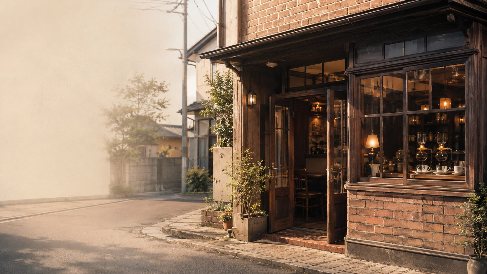
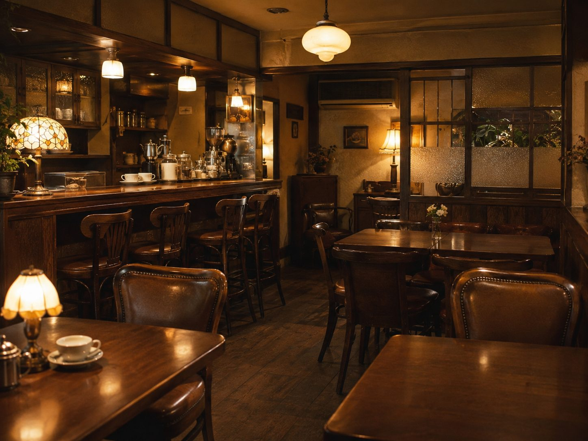
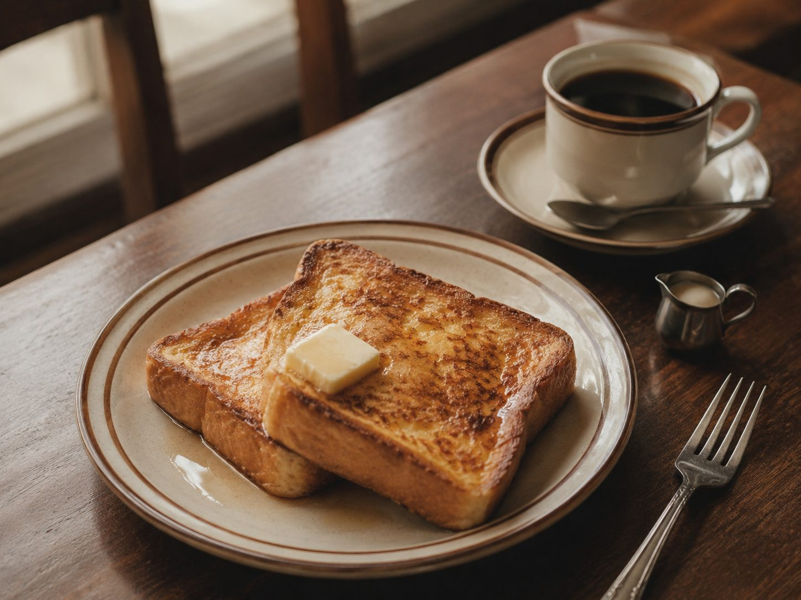
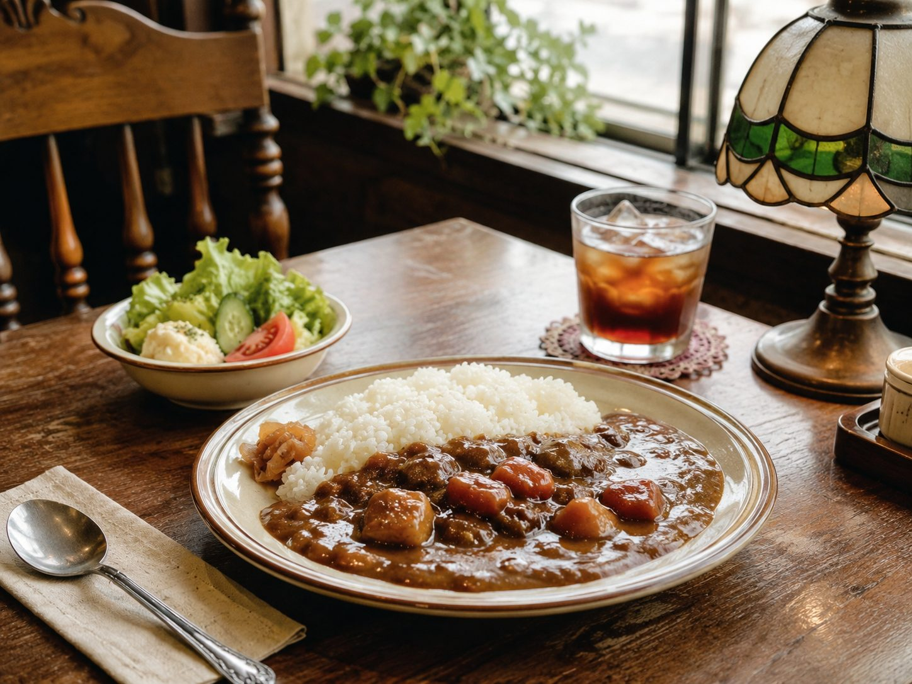

— 01
45年分の、レトロな空気
公式サイトに「45年の歴史」と記されている喫茶店です。運営会社の公式ページでも「懐かしさを感じるレトロな雰囲気の店内」と紹介されています。
流行に左右されない、落ち着いた時間を過ごせます。

CONCEPT
秋田市八橋本町。公式サイトでは「45年の歴史を持つ、懐かしい雰囲気と美味しいコーヒー」と紹介されています。懐かしさを感じるレトロな雰囲気の店内で、一杯ずつ丁寧に淹れるサイフォン式コーヒーが、豊かな香りとまろやかな味わいを届けます。
朝9時半から夕方5時まで。急がずに過ごすための時間が、ここにあります。

STRENGTH
— 01
公式サイトに「45年の歴史」と記されている喫茶店です。運営会社の公式ページでも「懐かしさを感じるレトロな雰囲気の店内」と紹介されています。
流行に左右されない、落ち着いた時間を過ごせます。
— 02
運営会社の公式ページに「一杯ずつ丁寧に淹れるサイフォン式コーヒーは、豊かな香りとまろやかな味わい」と記されています。注文を受けてから淹れる一杯です。
待つ時間まで含めて、コーヒーを味わえます。
— 03
美容室Hanako Elegance 八橋店に併設されています。近隣に共有の大型駐車場があることも、公式ページに記載されています。
施術の前後や待ち時間を、そのまま喫茶の時間にできます。
BACKGROUND
創業者ご本人についての情報は公式媒体で確認できなかったため、公式情報から確認できる範囲で、運営の考え方をご紹介します。
レトロカフェ異人館は、秋田市内で美容室Hanako Eleganceを展開する株式会社Hanakoが運営しています。美容室の八橋店に併設される形で、45年の歴史を持つ喫茶店が今も営まれています。
株式会社Hanakoが公式サイトで掲げているのは、次の3つの理念です。
公式サイトには「高品質なサービスを提供し、顧客一人ひとりのニーズに応え、皆様との信頼関係を築いてまいります」とも記されています。髪を整える場所と、一杯のコーヒーで一息つく場所。そのどちらもが、同じ考え方の上に置かれています。
SIGNATURE
公式媒体で「一番人気」と明記された商品は確認できなかったため、断定はしていません。ここでは、運営会社の公式ページに掲載されているお品書きの中から、この店舗らしさが伝わる一品をご紹介します。

単品 950円 ／ セット 1,430円
運営会社の公式ページに掲載されている、異人館のお品書きの一品です。セットにすると、一杯ずつサイフォンで淹れるコーヒーと合わせて楽しめます。
開店は朝9時半。午前のうちに席について、淹れたてのコーヒーと一緒にゆっくり過ごす——そんな使い方に向いています。ラストオーダーは16時30分です。
イメージ画像上の写真は雰囲気を表すために制作したもので、実際の商品の写真ではありません。
HOW TO SPEND

朝9時30分から営業しています。一日の始まりに、一杯ずつ淹れるサイフォンコーヒーとトーストを。
美容室Hanako Elegance 八橋店に併設されています。施術の前後の時間を、そのまま喫茶の時間にできます。
異人館カレーは飲み物付きも用意されています。ラストオーダーは16時30分です。
INTERACTIVE PROTOTYPE ／ 動く新サービス試作
好みと気分にあわせて、コーヒーの選び方と、一緒に楽しむお品書きをご案内する試作です。実際にこの場で操作していただけます。
所要およそ1分。答えると、コーヒーの選び方と、一緒に楽しめるお品書きをご案内します。
サイフォンで一杯ずつ淹れるからこそ、好みに合わせて選ぶ意味があります。まずは試してみてください。
質問 1 / 5
選択肢をひとつ選んでから、次へ進んでください。
RESULT
選び方の目安ができるので、いつもと違う一杯を試すきっかけになります。注文前の迷いが減ります。
「何がおすすめですか」と聞かれる前に、会話のきっかけができます。お品書きの中で注文の幅が広がる可能性があります。
まずはレジ横や卓上にQRコードを1枚置くだけから。期間を決めて置いていただき、合わなければ外していただいて構いません。
実施前の確認事項：診断で案内する内容は、公式ページに掲載されているお品書きの範囲に限っています。実際に導入される場合は、店舗で扱っているコーヒーの種類や表現を確認したうえで、内容を差し替える必要があります。
INFORMATION
営業時間は2024年6月1日以降の公式案内にもとづいています。最新情報は店舗の公式案内をご確認ください。
VISIT
お問い合わせ・ご来店の前に、公式の案内をご確認ください。